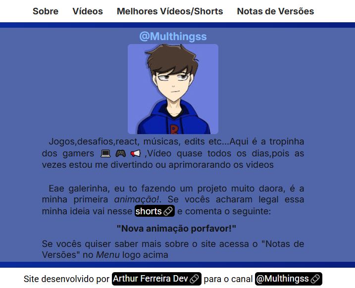

Versões de Teste
Versão 0.1.0
- O Esqueleto do site
- O estilo do site
- Adição do Menu no topo da página
- Ajustes de tamanho do site para a tela do usuário
- E a adição da funcionalidade de sumir e aparecer coisas
no menu para aparelhos pequenos
Construção do esqueleto do site.
No dia 25 de abril eu decidi criar um megaprojeto, que no caso, era o site de um canal com mais de 4.4 mil inscritos!
O @Multhings me autorizou a fazer o site para seu canal. E por isso eu fiz o esqueleto do site. Foram adicionados os seguintes recursos:
Data de lançamento: 25-26/04/2025